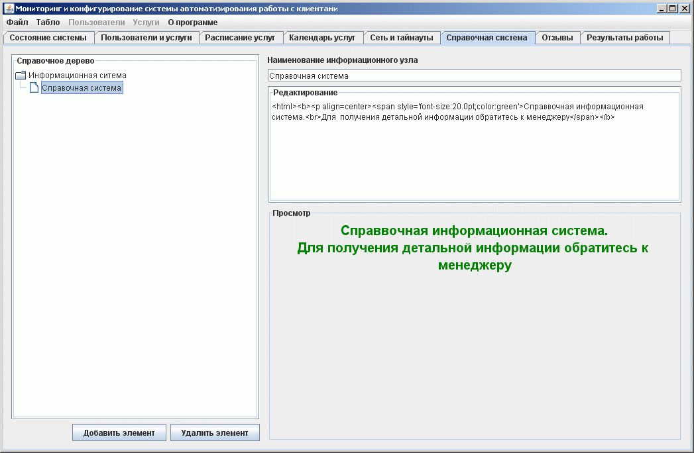

Справочная информация на пункте регистрации
На этой закладке формируется дерево справочной информации, которое доступно для чнение с пункта регистрации

В левой части расположено само дерево справочных узлов. Можно добавлять новые или удалять старые узлы. Дерево может иметь произвольную вложенность.
Справа расположены элементы редактировани содержимого справки. Можно изменить наименование узла. Текст справки имеет HTML форматирование, по этому можно подготовить информацию в любом удобном для восприятия пользователем виде. В части "Просмотр" можно сразу видеть как информация будет отображена на пункте регистрации.
Кнопку "Справка" можно отключить на пункте регистрации и не формировать справочное дерево за ненадобностью.